A redesign of the Gemini home screen on iOS. I first rebuilt the app screen by screen, then replaced its row of generic prompts with two stacks of suggestions: one based on the time and place, and one that returns to recent work.
The prompts are the same on every phone and ignore what you did the last time you opened the app. Most of the screen is empty.
It uses your first name and nothing else.
Nothing here suggests the app can read a photograph or write working code.
The space under the greeting is the first thing people see, and it holds nothing they use.
I watched classmates open their AI assistants. Almost nobody read the suggested prompts. They tapped the text field and typed the question they already had.
Typing their own question was faster than reading the list.
To find one, they had to remember that it existed and what it was called.
The app knows the time, your location and your last conversation, and none of it appears on the first screen.
I started by trying to write better suggested prompts, which only produced a different list. I changed the question to what the home screen should show, given what the app already knows about you.
Before
A row of suggested prompts
The same prompts for everyone, at any time
After
Two labelled stacks
One for the time and place, one for recent work
The stacks take more space than the prompt row, so I set rules before drawing them and cut most of my early sketches against them.
A card has to be more useful than the question you were about to type.
The stacks use Gemini's own type, colour and components.
Space for the stacks comes from the text field, so each card has to justify it.
Gemini uses its own design kit, separate from Material Design, so few parts were available in a library. I drew the typeface, icons, status bar and two keyboards as vectors, then rebuilt each screen of a chat session.
Google Sans Flex, drawn character by character.
I matched each icon's corner rounding and stroke weight to the app.
Apple's design kit does not include the versions on my phone, so I built both.
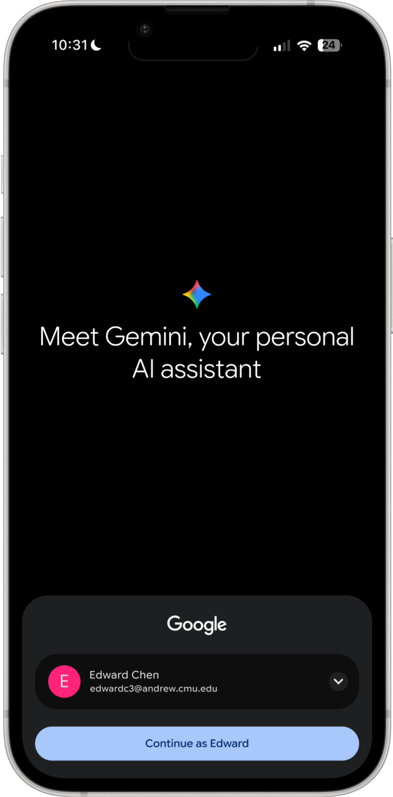
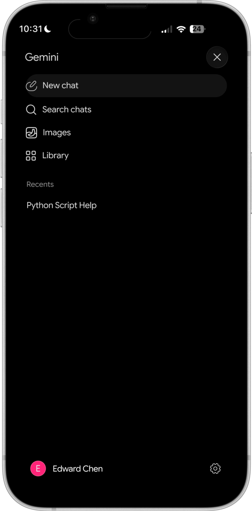
Signing in takes one button because the Google account is already on the phone. The side drawer lists new chat, search, images and library, then recent chats.
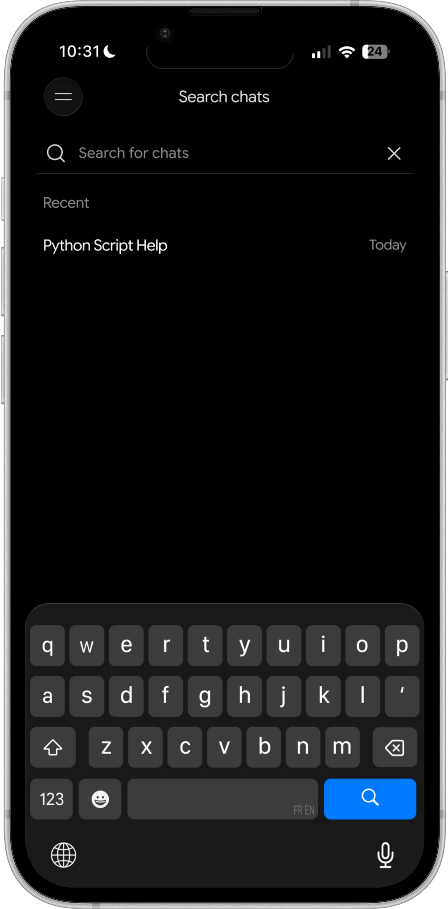
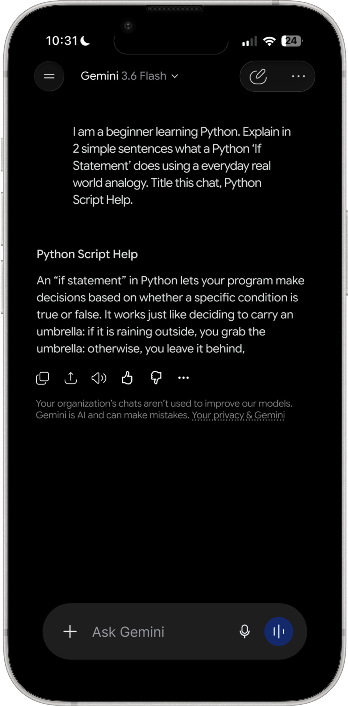
Once a chat leaves the recents list, search is the only way back to it, and you need to remember it exists. The chat opened here, Python Script Help, is the one this project started from.
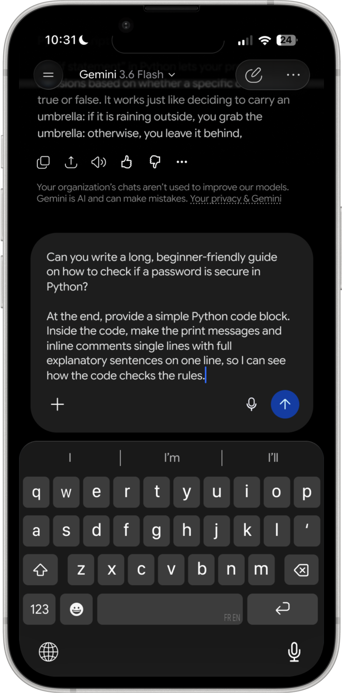
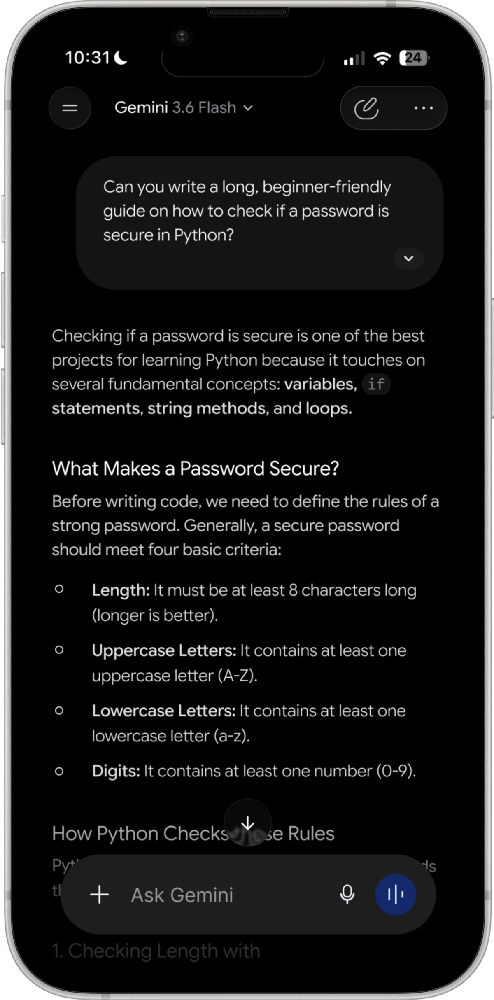
I asked a long question to see how the interface handles a long answer. Gemini breaks it up with a heading and a bulleted list, and the sent prompt collapses to one line.
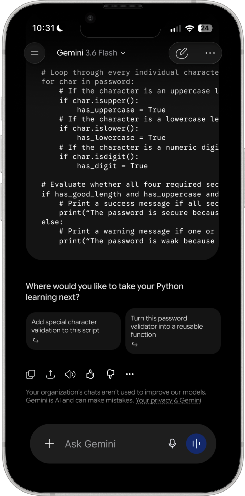
Code arrives in a code block with two suggested next steps under it. Long lines in this block led to the side project below.
Thumbs down opens a sheet with six reasons and a comment field. After you submit, the chat shows your rating and a one-line thank you.
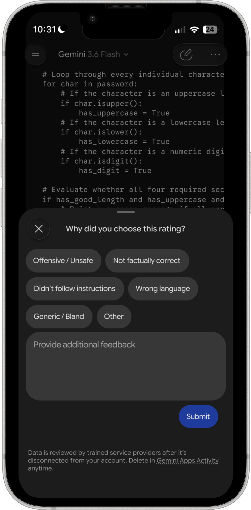
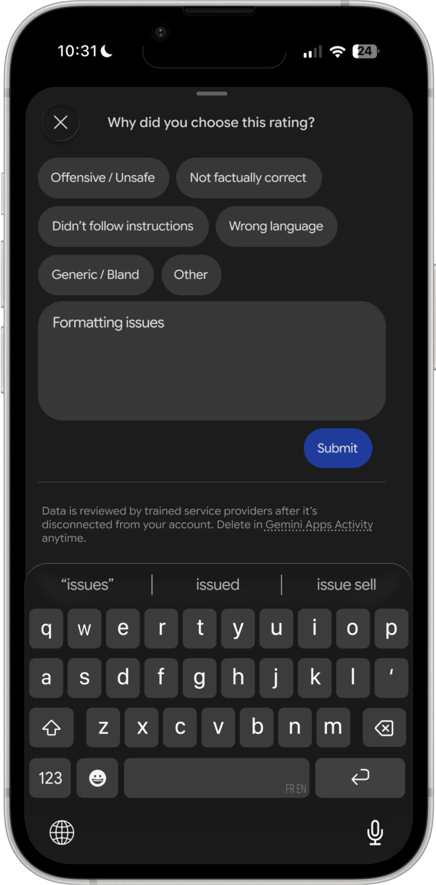
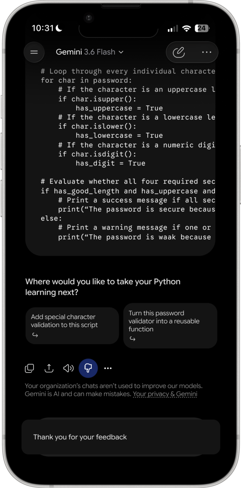
Code blocks in the chat cut off long lines, including the full-sentence comments Gemini writes. I designed a fix before checking whether it was worth building.
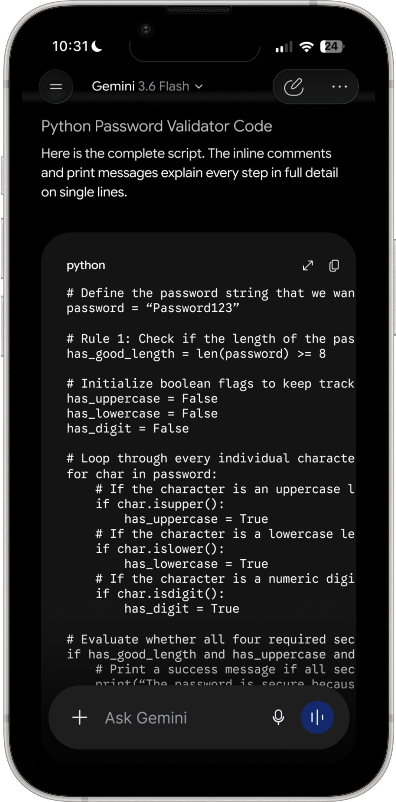
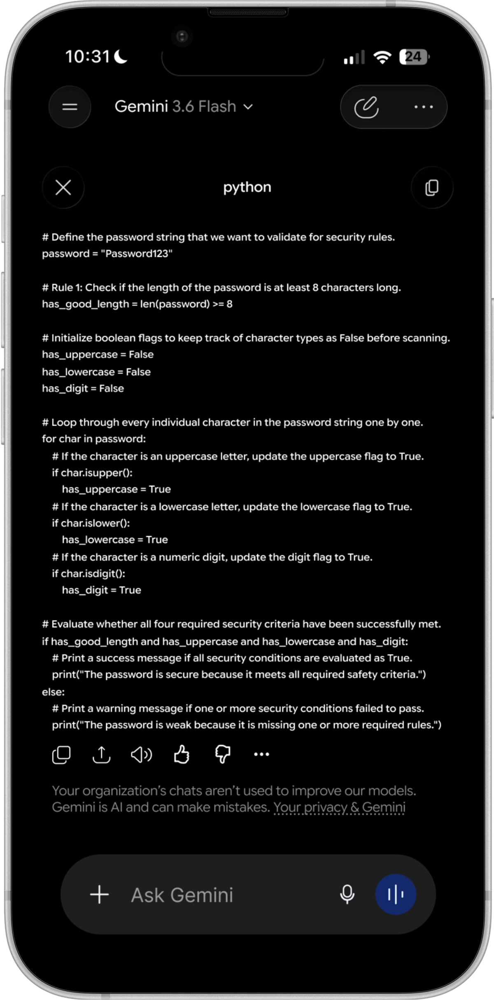
A button at the top right of the block opens it fullscreen, with the chat input still available. Whole lines fit on the screen.
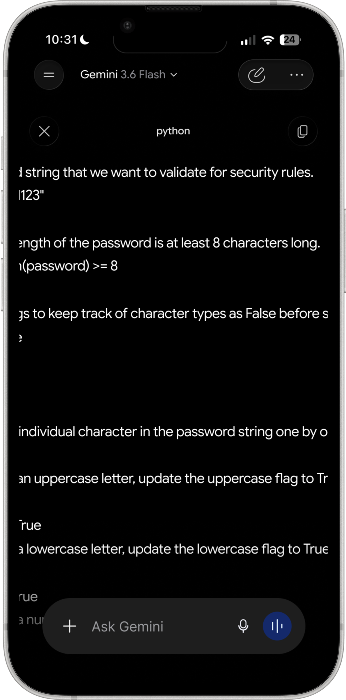
At any text size above the default, the ends of the lines go off the screen again.
In landscape, long lines fit across the wide edge of the screen. It was the best version for reading code on a phone, but few people review code on a phone. They do it at a desk.
I had found a real problem without checking how many people it affected. I set the code view aside and made the home screen the project.
Gemini has no public design kit, so I documented its type, colour and components from my recreation, sampling values from my renders. Then I added the stacks to it.
Google Sans Flex for the app, and SF Pro for anything iOS draws. Each size is recorded where it appears.
Blue from the glow behind the text field, blacks from the surfaces, greys from secondary text.
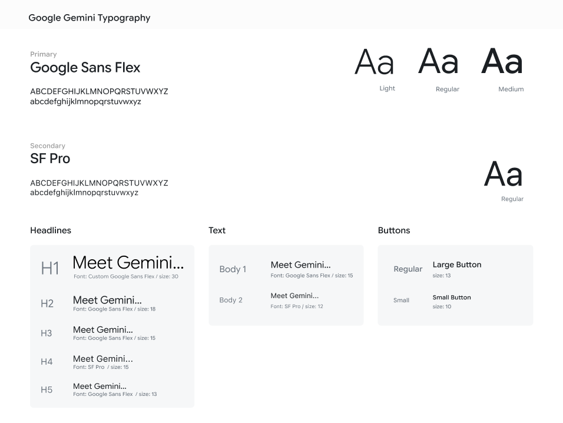
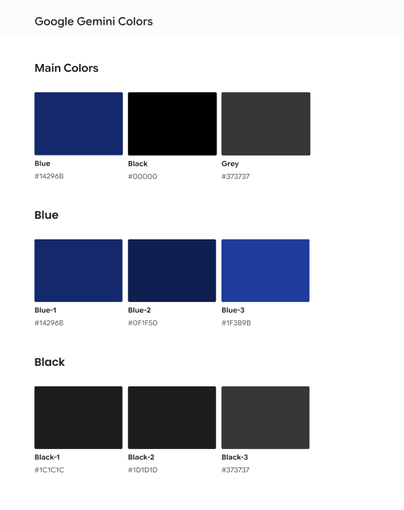
Every part of a chat session is a component in one Figma file, including the chat bubbles, both keyboards, the side drawer, the feedback sheets and the suggestion cards. I built the stacks from these components so they match the app.
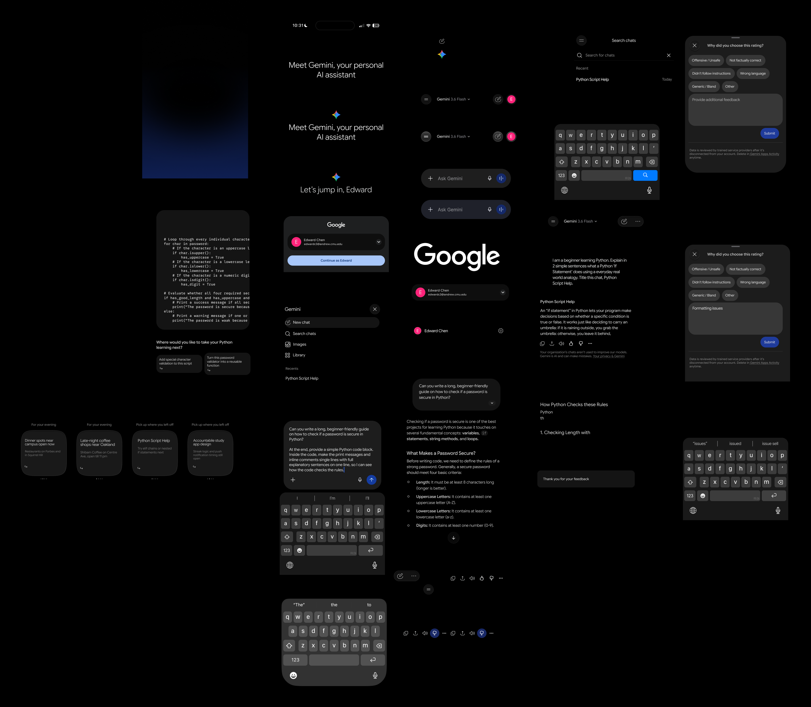
The greeting stays, and two labelled stacks replace the prompt row. The left stack suggests things for the time and place, and the right one returns to recent work. Each card names something specific, such as Shibam Coffee on Centre Avenue, open until 11 pm, or the next topic in the Python chat.
The cards are glass so the blue gradient behind Gemini's text field shows through them. A solid fill would be easier to read, but it would look added on top of the app.
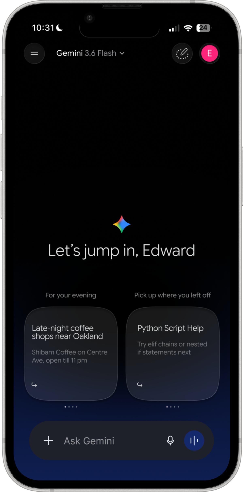
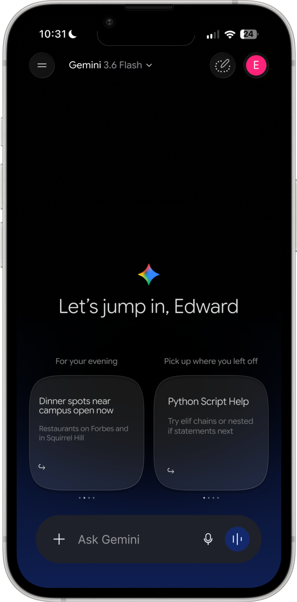
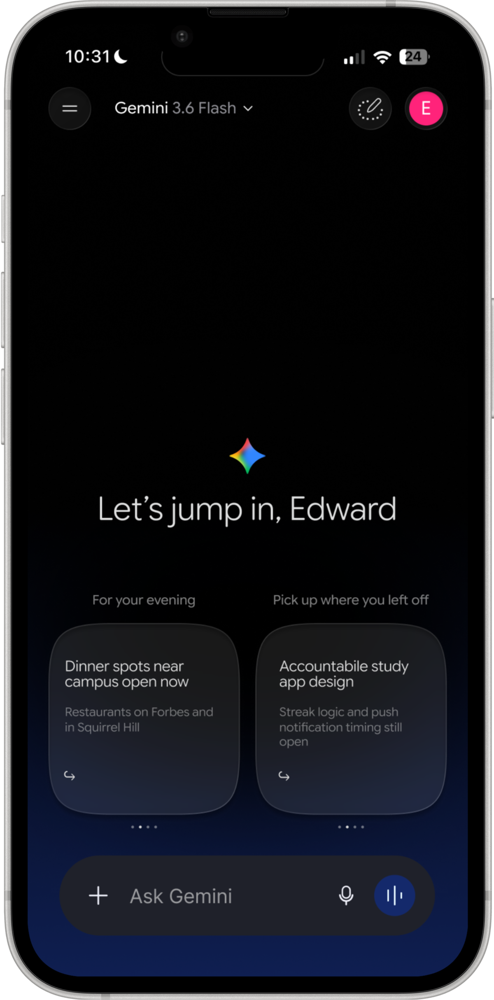
The evening stack changes from coffee to dinner, then the work stack changes from the Python chat to the study app project.
I would rebuild the app first again. Until I had the screens at full size, I could not tell which empty areas were intentional.
The fullscreen code view fixed a real problem, but few people would use it. This project taught me to check how many people a problem affects before designing for it.
Next I would design for wrong guesses. The current design does not say what happens when a suggestion misreads the time, place or task.